| 's-Gravenhage at 345, -39.3% change |  | Lopik at 367, 4.5% change | 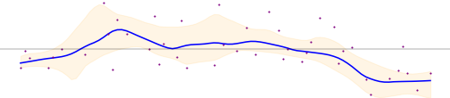 |
| 's-Hertogenbosch at 60, -50.3% change |  | Losser at 152, -42.1% change |  |
| Aa en Hunze at 79, -29.6% change |  | Maasdriel at 112, -10.5% change | |
| Aalsmeer at 60, -10.7% change | 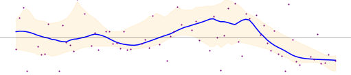 | Maasgouw at 22, -74.6% change |  |
| Aalten at 1033, -4.0% change |  | Maassluis at 101, 3.7% change |  |
| Achtkarspelen at 84, -4.4% change |  | Maastricht at 271, -25.6% change |  |
| Alblasserdam at 90, -59.6% change |  | Medemblik at 160, 62.7% change | |
| Albrandswaard at 154, -36.7% change | | Meerssen at 26, -73.6% change | |
| Alkmaar at 203, -25.9% change | 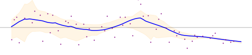 | Meierijstad at 16, -45.9% change |  |
| Almelo at 273, -47.1% change | 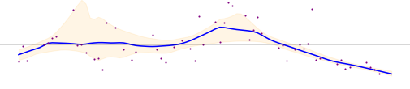 | Meppel at 0, -100.0% change | |
| Almere at 434, -50.6% change |  | Middelburg at 252, -5.5% change |  |
| Alphen aan den Rijn at 72, -34.1% change |  | Midden-Delfland at 13, -12.5% change | 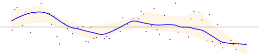 |
| Alphen-Chaam at 111, -31.3% change | 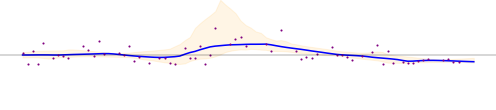 | Midden-Drenthe at 94, -57.0% change | 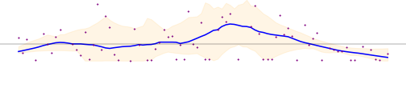 |
| Altena at 403, -5.5% change |  | Midden-Groningen at 113, -41.2% change |  |
| Ameland at 564, -74.6% change | 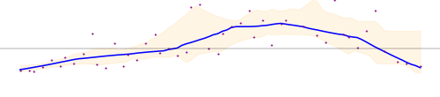 | Moerdijk at 345, 64.3% change | |
| Amersfoort at 234, -9.4% change |  | Molenlanden at 58, -57.3% change |  |
| Amstelveen at 621, 65.3% change | 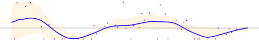 | Montferland at 28, -60.3% change | 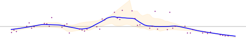 |
| Amsterdam at 455, -42.9% change |  | Montfoort at 300, -37.5% change |  |
| Apeldoorn at 0, -100.0% change |  | Mook en Middelaar at 108, -18.0% change |  |
| Arnhem at 214, 9.3% change |  | Neder-Betuwe at 76, -20.1% change |  |
| Assen at 441, -4.8% change | | Nederweert at 42, 15.5% change |  |
| Asten at 15, -82.2% change |  | Nieuwegein at 130, -37.2% change | 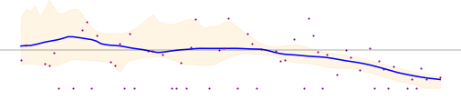 |
| Baarle-Nassau at 7, -97.6% change | | Nieuwkoop at 131, -38.0% change |  |
| Baarn at 17, -90.5% change | 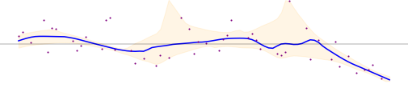 | Nijkerk at 0, -100.0% change |  |
| Barendrecht at 74, -51.3% change |  | Nijmegen at 174, -22.3% change | 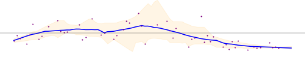 |
| Barneveld at 137, 28.8% change |  | Nissewaard at 300, -38.0% change | |
| Beek at 6, -63.0% change |  | Noardeast-Fryslân at 99, -17.7% change |  |
| Beekdaelen at 10, -69.6% change |  | Noord-Beveland at 676, -65.5% change |  |
| Beesel at 7, -51.4% change | | Noordenveld at 0, -100.0% change |  |
| Berg en Dal at 136, -54.0% change |  | Noordoostpolder at 80, -50.7% change |  |
| Bergeijk at 10, -25.7% change |  | Noordwijk at 70, -65.5% change |  |
| Bergen (L.) at 49, -15.1% change | | Nuenen, Gerwen en Nederwetten at 6, -30.3% change | |
| Bergen (NH.) at 108, -28.2% change |  | Nunspeet at 35, -73.7% change | 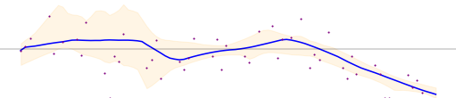 |
| Bergen op Zoom at 103, -8.8% change |  | Oegstgeest at 48, -44.6% change | 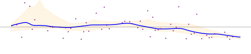 |
| Berkelland at 0, -100.0% change | | Oirschot at 35, -45.9% change |  |
| Bernheze at 86, 12.3% change | 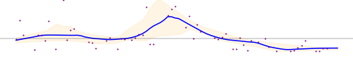 | Oisterwijk at 46, -44.5% change |  |
| Best at 63, -64.8% change |  | Oldambt at 154, -44.1% change |  |
| Beuningen at 22, -30.6% change | 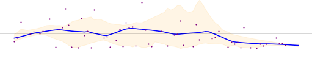 | Oldebroek at 90, -70.8% change | |
| Beverwijk at 112, -13.0% change |  | Oldenzaal at 390, -34.9% change |  |
| Bladel at 261, -24.8% change |  | Olst-Wijhe at 35, -73.3% change |  |
| Blaricum at 239, -27.0% change | 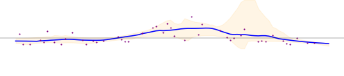 | Ommen at 0, -100.0% change | 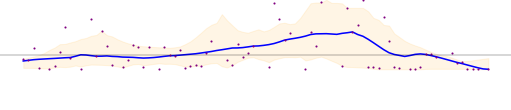 |
| Bloemendaal at 49, -6.8% change | | Oost Gelre at 23, -84.2% change |  |
| Bodegraven-Reeuwijk at 45, -78.1% change |  | Oosterhout at 61, -18.1% change | 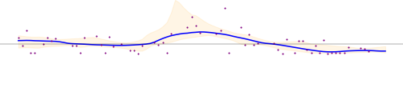 |
| Boekel at 5, -61.4% change |  | Ooststellingwerf at 154, -9.5% change | 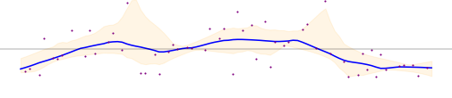 |
| Borger-Odoorn at 153, -47.9% change |  | Oostzaan at 0, -100.0% change | |
| Borne at 69, -51.9% change | | Opmeer at 0, -100.0% change | 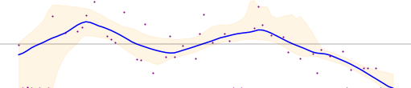 |
| Borsele at 97, -23.5% change | | Opsterland at 50, 2.7% change |  |
| Boxtel at 73, -19.1% change |  | Oss at 0, -100.0% change |  |
| Breda at 130, -24.1% change |  | Oude IJsselstreek at 87, -44.2% change |  |
| Brielle at 41, -66.4% change | 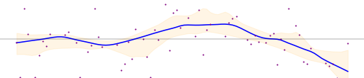 | Ouder-Amstel at 59, 40.7% change | 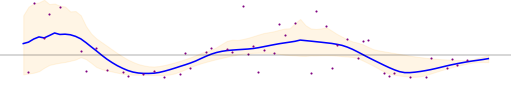 |
| Bronckhorst at 13, -74.7% change | 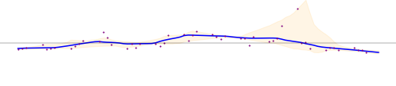 | Oudewater at 236, -43.1% change |  |
| Brummen at 145, -24.1% change |  | Overbetuwe at 146, -13.2% change | 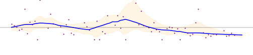 |
| Brunssum at 23, -51.6% change |  | Papendrecht at 468, -17.1% change |  |
| Bunnik at 57, -68.5% change |  | Peel en Maas at 76, -56.4% change |  |
| Bunschoten at 36, -40.1% change | | Pekela at 130, -63.9% change |  |
| Buren at 59, -45.7% change | 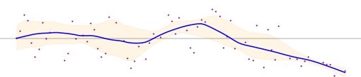 | Pijnacker-Nootdorp at 29, -25.5% change | 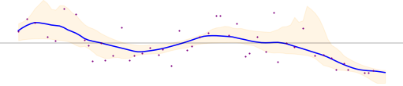 |
| Capelle aan den IJssel at 171, -38.4% change | 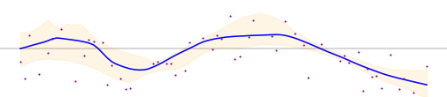 | Purmerend at 117, -61.6% change | |
| Castricum at 87, -47.8% change | 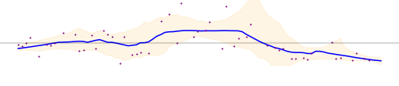 | Putten at 101, -4.8% change |  |
| Coevorden at 11, -93.4% change | 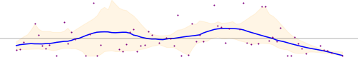 | Raalte at 115, -28.3% change | 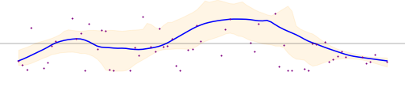 |
| Cranendonck at 40, -82.3% change |  | Reimerswaal at 90, 63.3% change | |
| Culemborg at 204, -62.0% change | | Renkum at 155, -42.9% change |  |
| Dalfsen at 76, -55.0% change | 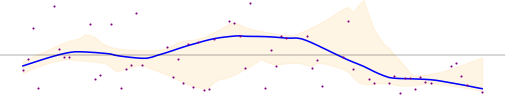 | Renswoude at 33, -10.0% change |  |
| Dantumadiel at 0, -100.0% change | 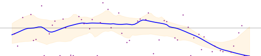 | Reusel-De Mierden at 168, -24.3% change |  |
| De Bilt at 179, -32.9% change |  | Rheden at 67, -37.6% change |  |
| De Fryske Marren at 111, -36.9% change |  | Rhenen at 254, -8.8% change |  |
| De Ronde Venen at 128, -43.4% change |  | Ridderkerk at 229, -6.1% change |  |
| De Wolden at 0, -100.0% change |  | Rijssen-Holten at 112, -53.2% change | 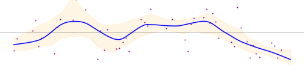 |
| Delft at 54, -26.5% change |  | Rijswijk at 29, -26.4% change |  |
| Den Helder at 676, -2.2% change |  | Roerdalen at 15, -43.6% change | |
| Deurne at 9, -69.5% change | 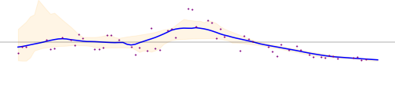 | Roermond at 81, -50.6% change | 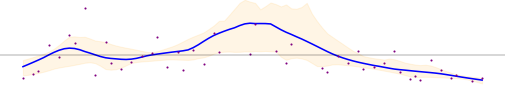 |
| Deventer at 167, -22.5% change | 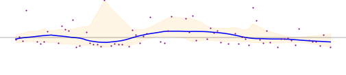 | Roosendaal at 22, -67.1% change |  |
| Diemen at 0, -100.0% change |  | Rotterdam at 340, -27.3% change |  |
| Dinkelland at 301, -7.6% change |  | Rozendaal at 2, -35.5% change |  |
| Doesburg at 46, -36.7% change |  | Rucphen at 10, -3.0% change |  |
| Doetinchem at 52, -76.9% change |  | Schagen at 307, 9.7% change | |
| Dongen at 0, -98.6% change |  | Scherpenzeel at 24, -70.1% change | |
| Dordrecht at 135, -31.4% change | | Schiedam at 221, 19.3% change |  |
| Drechterland at 69, -0.8% change | | Schiermonnikoog at 234, -82.7% change | |
| Drimmelen at 46, -69.3% change | | Schouwen-Duiveland at 2050, 16.5% change |  |
| Dronten at 200, -56.9% change | | Simpelveld at 125, -36.7% change |  |
| Druten at 146, -23.8% change |  | Sint-Michielsgestel at 88, -22.5% change | |
| Duiven at 34, -35.3% change |  | Sittard-Geleen at 48, -50.7% change | |
| Echt-Susteren at 30, -45.5% change | | Sliedrecht at 207, -39.2% change |  |
| Edam-Volendam at 101, -65.4% change | | Sluis at 1960, 2.3% change |  |
| Ede at 295, 27.8% change |  | Smallingerland at 42, -33.7% change |  |
| Eemnes at 0, -100.0% change | 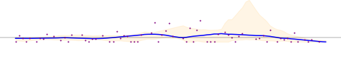 | Soest at 18, -89.4% change |  |
| Eemsdelta at 114, -59.6% change |  | Someren at 8, -82.8% change |  |
| Eersel at 12, -25.2% change |  | Son en Breugel at 5, -29.2% change |  |
| Eijsden-Margraten at 69, -23.1% change |  | Stadskanaal at 0, -100.0% change | |
| Eindhoven at 123, -25.8% change |  | Staphorst at 9, -83.2% change |  |
| Elburg at 67, -73.9% change |  | Stede Broec at 75, -0.9% change | |
| Emmen at 376, 0.2% change | | Steenbergen at 0, -100.0% change | |
| Enkhuizen at 65, -0.7% change |  | Steenwijkerland at 213, -10.3% change |  |
| Enschede at 599, 28.3% change |  | Stein at 232, -4.8% change |  |
| Epe at 176, -36.7% change | 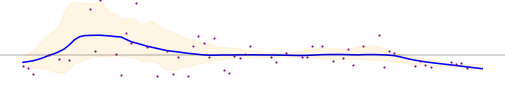 | Stichtse Vecht at 108, -45.7% change | |
| Ermelo at 98, -56.7% change | | Súdwest-Fryslân at 124, -57.9% change |  |
| Etten-Leur at 0, -100.0% change |  | Terneuzen at 231, 33.0% change | |
| Geertruidenberg at 54, -39.3% change |  | Terschelling at 1506, -10.3% change | 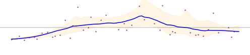 |
| Geldrop-Mierlo at 9, -27.8% change |  | Texel at 490, -36.0% change | 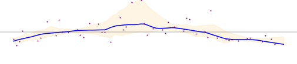 |
| Gemert-Bakel at 7, -39.7% change | 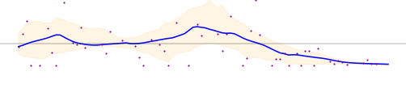 | Teylingen at 25, -58.8% change | 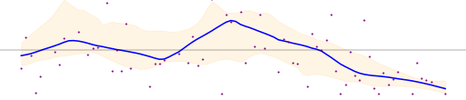 |
| Gennep at 233, -17.8% change | | Tholen at 196, -54.6% change | |
| Gilze en Rijen at 26, -57.7% change | 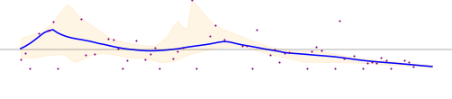 | Tiel at 324, -27.6% change | 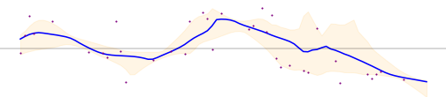 |
| Goeree-Overflakkee at 133, -80.4% change | | Tilburg at 205, 28.7% change | 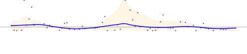 |
| Goes at 164, -23.6% change |  | Tubbergen at 0, -99.4% change | 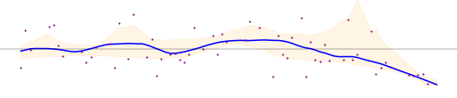 |
| Goirle at 87, -30.9% change | 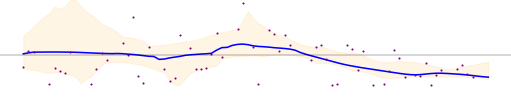 | Twenterand at 175, -10.5% change | |
| Gooise Meren at 87, -57.7% change |  | Tynaarlo at 114, 14.6% change | 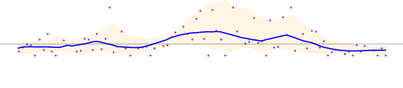 |
| Gorinchem at 193, -30.7% change |  | Tytsjerksteradiel at 0, -100.0% change | |
| Gouda at 371, -25.7% change | | Uitgeest at 36, -12.9% change | |
| Groningen at 63, -63.0% change | | Uithoorn at 233, -64.3% change |  |
| Gulpen-Wittem at 154, 17.3% change | | Urk at 35, -50.9% change | |
| Hattem at 105, -56.5% change | | Utrecht at 204, -28.2% change | |
| Haaksbergen at 327, -42.4% change |  | Utrechtse Heuvelrug at 84, -57.6% change | |
| Haarlem at 564, -20.5% change |  | Vaals at 222, 4.7% change |  |
| Haarlemmermeer at 116, -46.7% change |  | Valkenburg aan de Geul at 17, -61.6% change | |
| Halderberge at 9, -67.5% change | | Valkenswaard at 16, -25.6% change | |
| Hardenberg at 223, 9.0% change |  | Veendam at 299, -14.4% change | |
| Harderwijk at 92, -59.8% change | | Veenendaal at 2, -98.6% change |  |
| Hardinxveld-Giessendam at 124, -25.4% change |  | Veere at 113, -5.3% change | |
| Harlingen at 99, -56.8% change | | Veldhoven at 24, -25.8% change | |
| Heemskerk at 105, -12.9% change | | Velsen at 348, -24.2% change |  |
| Heemstede at 234, -66.7% change | | Venlo at 50, -51.8% change |  |
| Heerde at 0, -100.0% change |  | Venray at 99, -35.6% change | |
| Heerenveen at 130, -29.6% change | | Vijfheerenlanden at 71, -61.8% change | |
| Heerlen at 12, -70.4% change | | Vlaardingen at 222, 3.0% change |  |
| Heeze-Leende at 5, -24.9% change |  | Vlieland at 584, -34.7% change | |
| Heiloo at 235, -31.6% change |  | Vlissingen at 228, -6.2% change |  |
| Hellendoorn at 16, -88.5% change |  | Voerendaal at 2, -80.5% change |  |
| Hellevoetsluis at 184, -48.9% change | | Voorschoten at 126, -13.8% change | |
| Helmond at 24, -28.7% change |  | Voorst at 10, -93.0% change |  |
| Hendrik-Ido-Ambacht at 71, -41.7% change |  | Vught at 17, -34.0% change | |
| Hengelo at 237, -52.1% change |  | Waterland at 0, -100.0% change | |
| Het Hogeland at 290, -52.7% change | | Waadhoeke at 39, -71.6% change | |
| Heumen at 30, -72.4% change |  | Waalre at 9, -25.7% change | |
| Heusden at 69, -37.6% change |  | Waalwijk at 141, -42.4% change |  |
| Hillegom at 84, -34.1% change |  | Waddinxveen at 183, 4.6% change | |
| Hilvarenbeek at 43, -14.2% change | | Wageningen at 5, -95.2% change |  |
| Hilversum at 71, -78.8% change | | Wassenaar at 7, -41.1% change | |
| Hoeksche Waard at 298, -43.6% change | | Weert at 300, 1.4% change |  |
| Hof van Twente at 50, -69.6% change | | Weesp at 264, -36.1% change |  |
| Hollands Kroon at 238, 3.9% change | | West Betuwe at 301, -22.0% change |  |
| Hoogeveen at 272, -39.3% change |  | West Maas en Waal at 314, -36.3% change |  |
| Hoorn at 255, -0.7% change |  | Westerkwartier at 180, -64.5% change |  |
| Horst aan de Maas at 15, -49.5% change | | Westerveld at 0, -100.0% change |  |
| Houten at 254, 31.6% change |  | Westervoort at 20, -35.4% change | |
| Huizen at 410, -41.3% change | | Westerwolde at 194, -57.8% change | |
| Hulst at 143, -45.3% change | | Westland at 70, -17.8% change | |
| IJsselstein at 127, -40.7% change |  | Weststellingwerf at 198, 1.8% change | |
| Katwijk at 85, -36.5% change | | Westvoorne at 283, -6.6% change | |
| Kaag en Braassem at 96, -29.7% change |  | Wierden at 5, -90.6% change |  |
| Kampen at 0, -100.0% change | | Wijchen at 235, 28.4% change | |
| Kapelle at 54, -23.5% change | | Wijdemeren at 47, -39.7% change | |
| Kerkrade at 393, 36.9% change | | Wijk bij Duurstede at 839, 12.1% change |  |
| Koggenland at 0, -100.0% change | | Winterswijk at 0, -100.0% change | |
| Krimpen aan den IJssel at 125, -71.1% change | | Woensdrecht at 79, -75.4% change |  |
| Krimpenerwaard at 273, -45.3% change |  | Woerden at 327, -74.5% change |  |
| Laarbeek at 6, -28.4% change | | Wormerland at 21, 21.8% change | |
| Landgraaf at 91, -2.6% change |  | Woudenberg at 32, -70.1% change | |
| Landsmeer at 0, -100.0% change | | Zaanstad at 105, -60.7% change |  |
| Lansingerland at 54, -16.5% change |  | Zaltbommel at 78, -37.9% change |  |
| Laren at 229, -26.9% change | | Zandvoort at 99, -6.8% change | |
| Leeuwarden at 64, -64.1% change |  | Zeewolde at 275, 0.7% change | |
| Leiden at 242, 1.4% change | | Zeist at 2, -98.5% change |  |
| Leiderdorp at 182, -6.6% change |  | Zevenaar at 29, -47.1% change | |
| Leidschendam-Voorburg at 21, -40.0% change | | Zoetermeer at 30, -44.9% change | |
| Lelystad at 376, -39.3% change | | Zoeterwoude at 43, -13.8% change | |
| Leudal at 24, -68.9% change | | Zuidplas at 186, -16.6% change |  |
| Leusden at 18, -35.3% change | | Zundert at 0, -100.0% change |  |
| Lingewaard at 227, 10.4% change | | Zutphen at 20, -85.0% change | |
| Lisse at 224, -36.5% change |  | Zwartewaterland at 252, -39.9% change |  |
| Lochem at 15, -77.5% change | | Zwijndrecht at 13, -78.3% change |  |
| Loon op Zand at 0, -100.0% change | | Zwolle at 61, -85.6% change | |